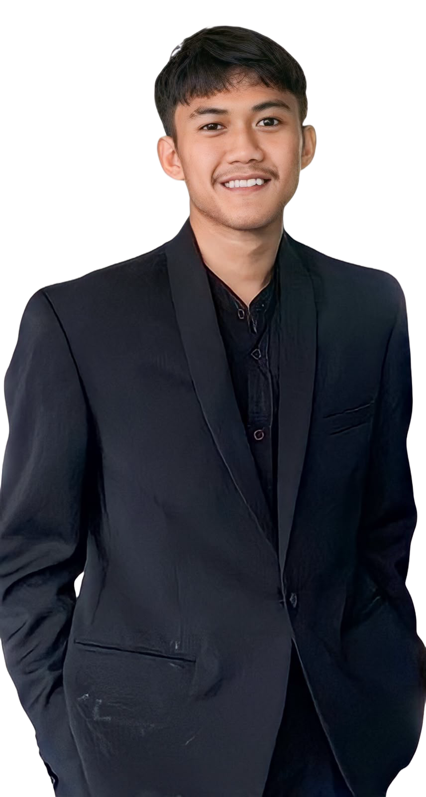
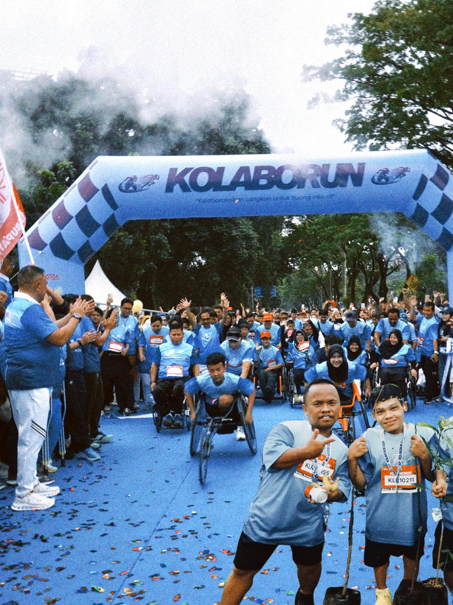
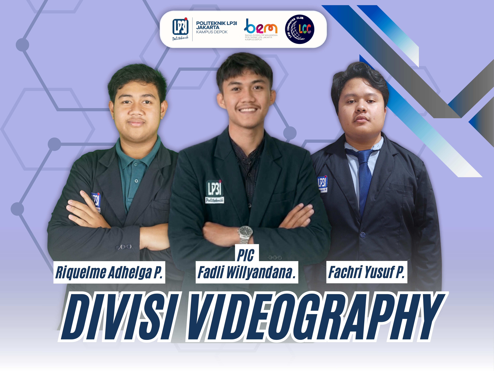
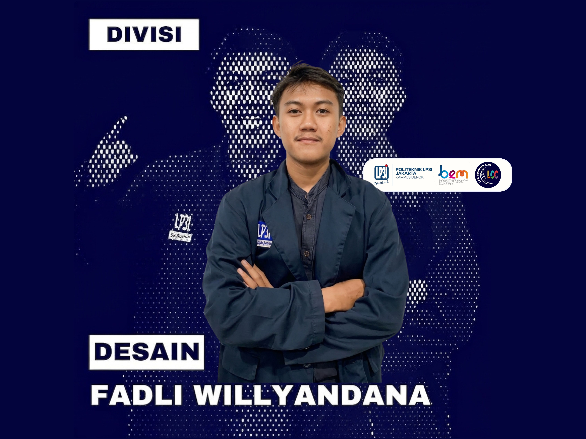
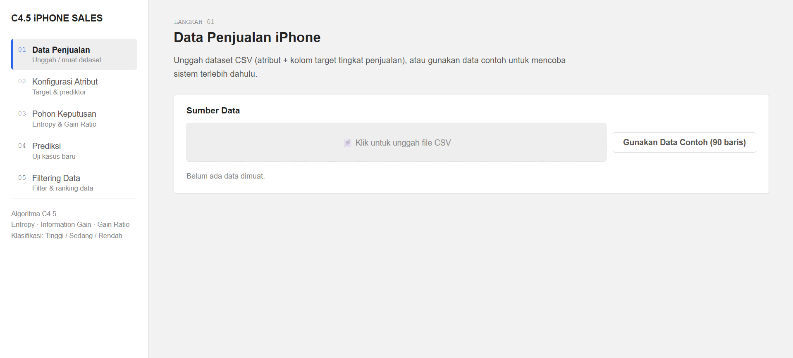
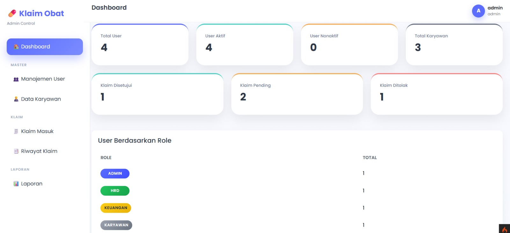
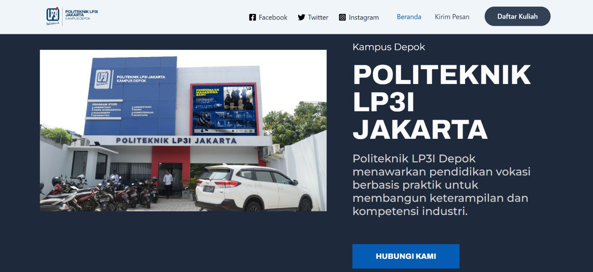

"Halo, saya Fadli Willyandana. Saya fokus membangun Web Aplikasi yang efisien dan terstruktur dari perancangan sistem dan Database, pengembangan Backend, hingga tampilan Frontend yang responsif."




HTML, CSS, JavaScript, PHP, CodeIgniter 4, React.js, Node.js, Express.js
MySQL, Supabase, Database Management, Data Analysis, Data Mining & Processing
GitHub, VS Code, Ms. Excel, Ms. Word

Aplikasi analisis data mining berbasis web untuk memprediksi pola keputusan penjualan iPhone menggunakan Algoritma C4.5 ( Decision Tree), dibangun menggunakan HTML, CSS, dan JavaScript.

Sistem pengajuan klaim medis berbasis web dengan alur multi-level approval untuk Karyawan, HRD, dan Finance, serta manajemen pengguna oleh Admin.

Website profil resmi LP3I Jakarta Kampus Depok berbasis WordPress yang memuat informasi program studi, pendaftaran mahasiswa baru (PMB), fasilitas, dan kontak kampus.